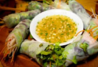
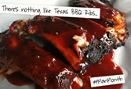
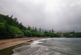

THIS MONTH |
|  |
In a special celebration of the culture, cuisine and community of Hana, executive chef Barry Villiarimo and local star chefs Sheldon Simeon, Mark "Gooch" Noguchi and Dave Power created an unforgettable six-course, cocktail-pairing dinner using ingredients from Mahele Farm. The sold-out dinner took place on May 11 at the Plantation Guest House and benefited Hana Youth Center and Mahele Farm.
View photos from the event on the Travaasa Hana Facebook page. |
|  |
What's manlier than Texas BBQ? Perfect for Man Month and summer, this recipe will have everyone begging for seconds. more |
|
Finally! A room in a spa dedicated to men. In honor of Man Month, we're introducing a new treatment room in Austin called the Western Sky. Find out what makes this room so unique and the manly spa treatments you can enjoy. more |
|
It wouldn't be Man Month without sharing a little beer knowledge. Enjoy beer tastings and educational classes at both Travaasa Austin and Travaasa Hana. more |
|  |
Let's go fishing! Pole fishing is a great activity for the whole family, and you will learn all about the history, cultural practices and craftsmanship of bamboo pole fishing. Enjoy a beautiful day in Hana at Kapueokahi (Hana Bay) and cast your pole into the bay for an experience that's hard to get anywhere else. more |
"Treated my wife to a spa day for her birthday in Heavenly Hana...Very peaceful and serene...The massages were outstanding and the spa facilities were very classy and upscale in an understated way to blend in with the serenity of the surroundings." - jwwcpa, from Redlands, CA, sharing his experience at Travaasa Hana on TripAdvisor |
ON THE HORIZON
July
In celebration of Independence Month at Travaasa in July, we’re inviting you to ignite your inner joy and find laughter at Travaasa. Empower and celebrate yourself by participating in our Inspire Fitness Boot Camp, Salsa Dance and Joy, Core Elation and Tai Chi Joy classes. Drink to your health in our Juicing class, which allows you to give your body all the vitamins and minerals it needs in a natural, effective and more time-efficient way. In Austin? Join us for our Fourth of July Celebration Pool Party.
August
Plunge into something new as the sun sets on your summer vacation with Dive Month at Travaasa. Take advantage of the adventures surrounding you with our Dive into Pilates, Tai Chi Dive and Surf, and Foot Care Going Deeper classes. Have a little fun with Pool Volleyball or Soaker Golf and Dive into Your Past with Journaling. Kick off the last weekend of summer with our Labor Day Mountain Ball Tournament. |
|